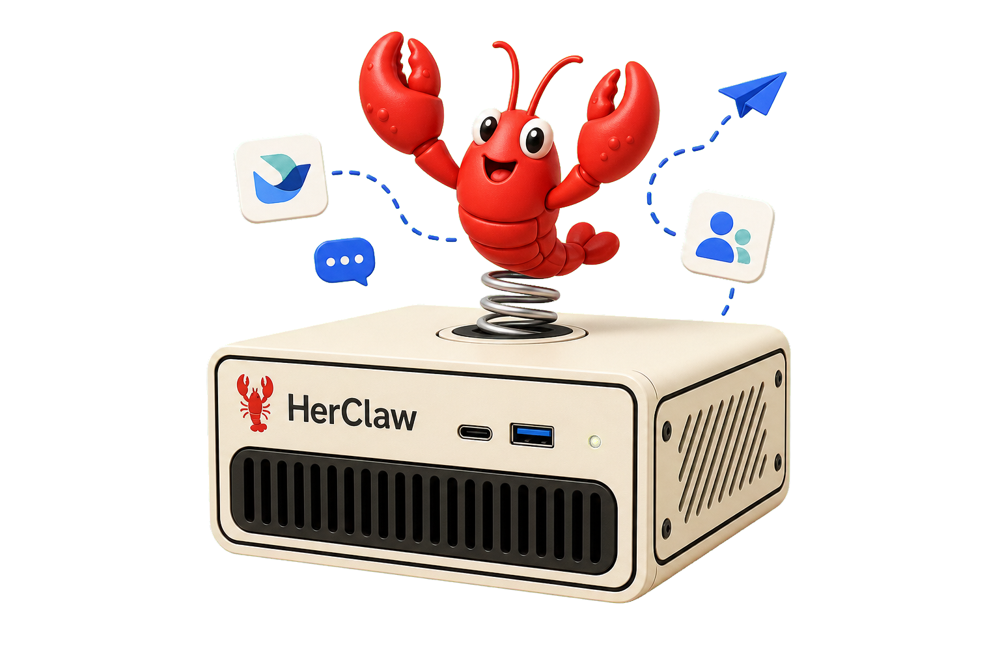

入口分散
资料和任务在各种 IM 群里，AI 却还在网页里。来回复制会打断思路，也让团队协作难以沉淀。
不用搭服务器，也能拥有一个常在线、能处理具体任务的 AI 队友。它把 AI 从网页工具带进 LINE、Slack、WhatsApp、飞书、钉钉、Zalo、Telegram 等即时通讯入口，让私聊、群聊、@ 派活和本地 Skills 变成团队日常。

很多人已经会用 AI，但真正回到工作里，它往往还是另一个需要切换、复制和解释背景的网页工具。
资料和任务在各种 IM 群里，AI 却还在网页里。来回复制会打断思路，也让团队协作难以沉淀。
很多机器人方案需要 Webhook、公网 IP、域名和服务器维护，小团队常常卡在“先搭系统”。
临时问答适合一次性使用，却不适合长期任务、团队入口和每天自动触发的工作流。
HerClaw 把安装、连接、运行、权限边界和使用入口一起产品化。
设备放在办公室、书架或工位旁，7×24 小时在线，任务在自己的环境里运行。
通过受控 IM 入口收发指令，和核心业务系统保持边界，数据处理更安心。
不用从公网服务器、回调地址和运维脚本开始折腾，把时间留给业务。
销售在路上、老师在教室、老板在手机上，都能直接在常用 IM 里给 AI 派活。
HerClaw 的价值不是功能堆叠，而是让 AI 在真实任务里先帮你动起来。
给主题、页数、用途和材料，先生成结构完整的第一版。
提取重点、标出风险条款，让人工复核更有方向。
根据固定结构生成框架，再由团队补真实数据和案例。
按年级、知识点和题目拆步骤，讲清楚为什么这样做。
行业简报、客户问题汇总、固定格式资料整理，都可以沉淀成可复用流程。
OpenClaw 和 Hermes 是两个队长型 Agent。需要处理复杂项目时，它们可以分别创建新的 Agent，组成多层级团队，做任务编排、并行协作和结果汇总。
你的效率执行官。擅长整理资料、生成内容、日常问答、任务拆解和信息归纳，也可以创建执行型子 Agent。
你的策略顾问。像信使一样连接信息、工具和决策，适合深度分析、复杂方案、长链路推理，也可以创建策略型子 Agent。
一个人发起任务，OpenClaw 和 Hermes 可以各自创建新的 Agent：研究、写作、审查、执行分头跑，最后由 HerClaw 合并结果，回到同一个 IM 会话里。
不用每次从零写长 prompt。一个任务跑顺之后，就可以被团队复用、调整和扩展。
一句话派活，可少写 prompt。
选择小龙虾或 Hermes 执行。
PPT、合同、投标、纪要、简报。
结果发回私聊或群聊。
没有专门 AI 工程师，也想把 AI 放进日常协作。
处理合同、方案、客户资料和汇报材料。
需要常在线 IM AI 助手，减少重复整理和写作。
希望 AI 做解释型辅导，讲步骤，也讲为什么。